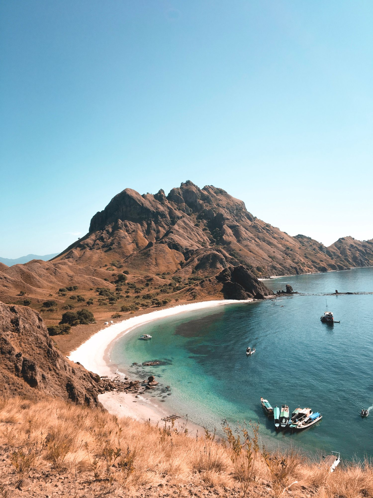
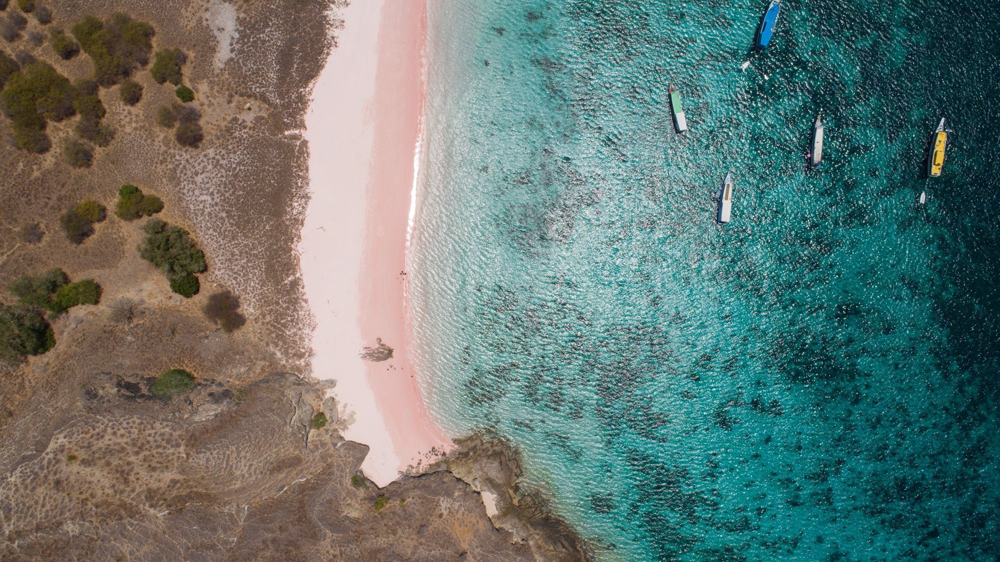
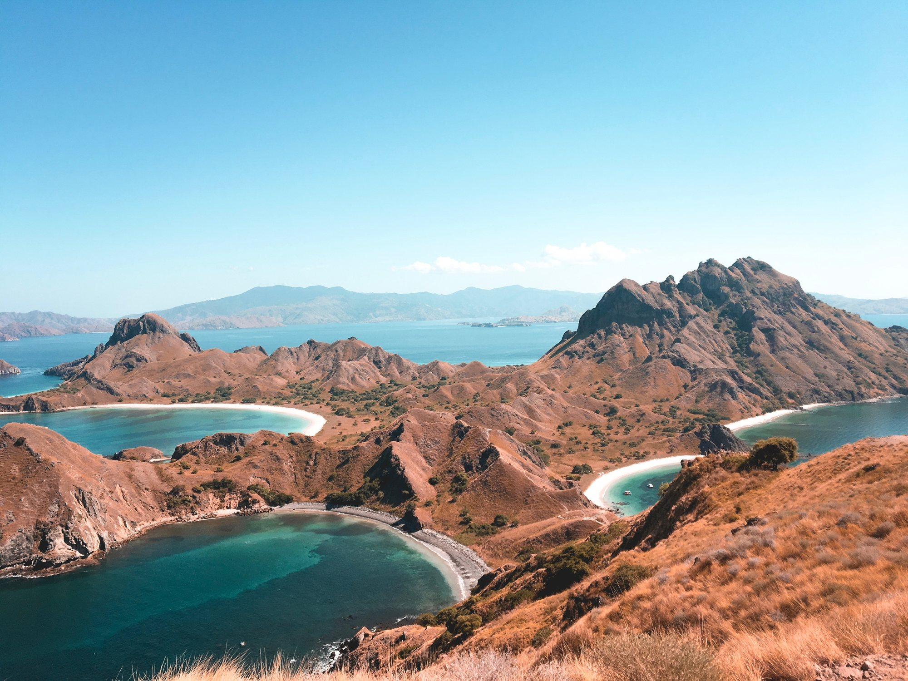
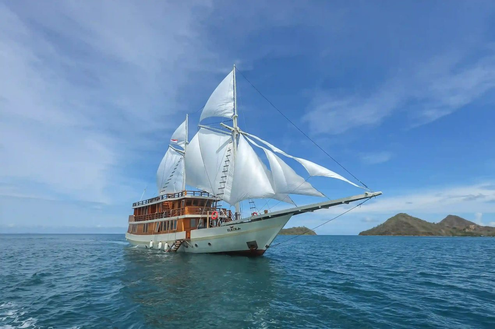
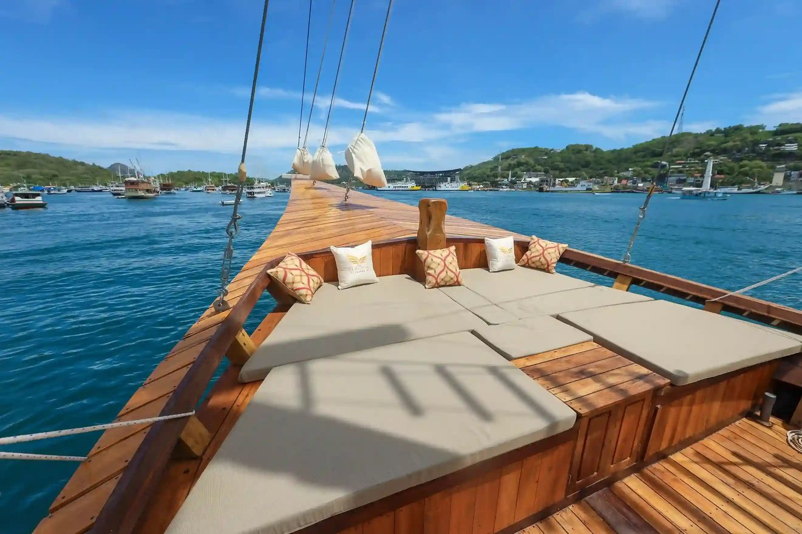
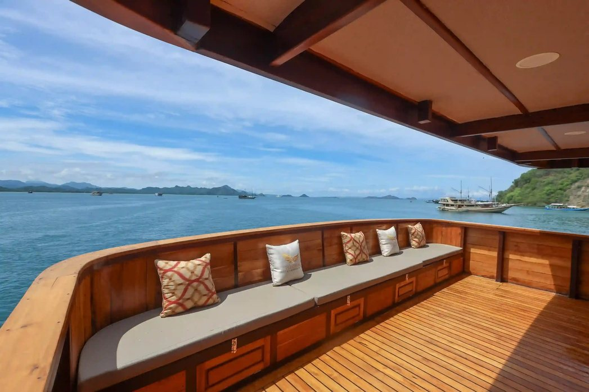
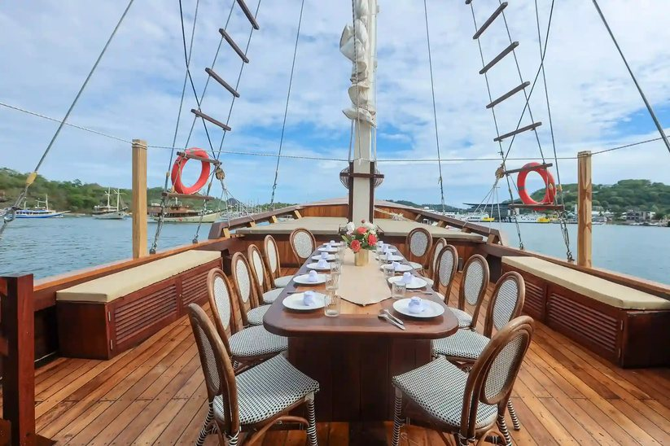
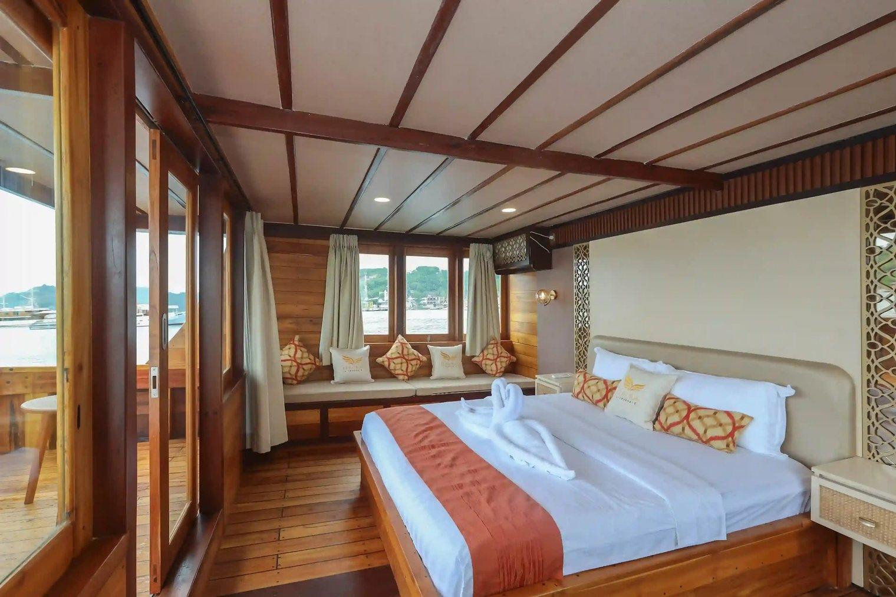
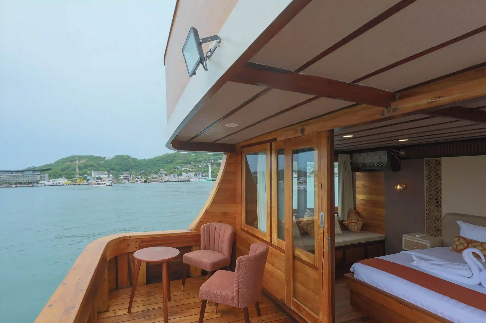
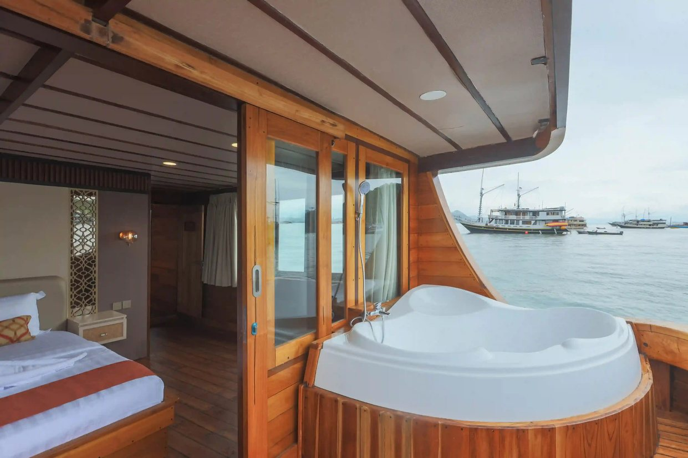

Collection · Nature · Sailing
Labuan
Bajo
Beyond the Shore,
Into the Blue
Melampaui pantai, menuju birunya laut.
- Dates
- 22–24 February 2027
- Length
- 3 days, 2 nights
- Aboard
- Elrora Liveaboard

Collection · Nature · Sailing
Beyond the Shore,
Into the Blue
Melampaui pantai, menuju birunya laut.
Why Labuan Bajo · Mengapa Labuan Bajo
Ruang untuk menikmati alam.
Komodo is best seen from the water. Three days on a phinisi, moving between islands at the pace of the sea.
You wake up anchored off a different island each morning: Padar’s ridges at sunrise, sand that really is pink, and the only place on earth where Komodo dragons live in the wild. The days are for swimming, snorkelling and climbing to the views; the evenings are for the deck.
Close enough to Jakarta and Bali for a long weekend, far enough to feel like somewhere else entirely.
Komodo paling indah dinikmati dari laut. Tiga hari di atas kapal phinisi, berpindah dari pulau ke pulau mengikuti ritme laut: Padar saat matahari terbit, Pantai Pink, dan komodo di habitat aslinya.

The package · Paket perjalanan
Kelor · Manjarite · Padar · Pink Beach · Komodo · Sebayur
Per person · Per orang
IDR 25,500,000
Two nights in the master cabin, every meal on board, the guide, the gear and your airport transfers, in one clear price.Dua malam di master cabin, semua makan di kapal, pemandu, perlengkapan, dan antar-jemput bandara dalam satu harga.

Day by day · Rencana harian
Islands and timings follow the tide and the weather on the day; your guide sets the order to get the best of each stop.
Labuan Bajo · Kelor Island · Manjarite · Kalong Island
Board in Labuan Bajo and sail straight into the park. A short climb on Kelor, a first swim at Manjarite, and dusk at Kalong, when thousands of flying foxes leave the mangroves.
Naik kapal di Labuan Bajo, mendaki singkat di Kelor, berenang di Manjarite, dan senja di Pulau Kalong saat ribuan kalong keluar dari hutan bakau.
Padar Island · Pink Beach · Komodo Island · Taka Makassar · Manta Point
Sunrise on Padar, the view of three bays in one frame. Then the pink sand, the Komodo dragons in their home ground, a sandbar in the middle of the sea at Taka Makassar, and mantas at Manta Point.
Matahari terbit di Padar, Pantai Pink, komodo di habitat aslinya, gosong pasir Taka Makassar, dan pari manta di Manta Point.
Sebayur Island · Labuan Bajo Harbour
A last swim and snorkel at Sebayur, then back to Labuan Bajo harbour and the airport.
Berenang dan snorkeling terakhir di Sebayur, lalu kembali ke pelabuhan Labuan Bajo dan bandara.
The boat · Kapal
A traditional wooden phinisi with shaded lounges, an open bow for sunbathing, and a long table on deck for dinner under the sky.
Kapal phinisi kayu tradisional dengan lounge teduh, haluan terbuka untuk berjemur, dan meja makan panjang di dek.




Your cabin · Kabin Anda
The boat’s best room: a large bed, wide windows onto the water, a private balcony and a bathtub with a view.
Kabin terbaik di kapal: tempat tidur besar, jendela lebar menghadap laut, balkon pribadi, dan bathtub dengan pemandangan.



What’s included · Termasuk dalam paket
From pick-up at Komodo Airport to drop-off three days later, the plan is ours. Even the photos: the crew shoots on camera, drone and GoPro.
On board · Di kapal
Food & drink · Makan & minum
In the water · Di laut
Taken care of · Sudah kami urus
Get in touch · Hubungi kami
Yuk, rencanakan perjalananmu.
PT Vakansi Media Global · Licensed travel agency · Jakarta Selatan